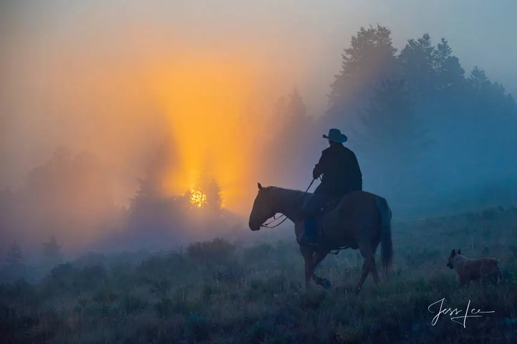

Modelos
Agrega aquí los modelos disponibles de Yellowstone.
Gorras western · Saltillo y Ramos
Una gorra. Mil formas de vivir el western.
Explora nuestra selección de gorras y encuentra el estilo que va contigo: ganadería, pesquería, cultivo, traileros y mucho más.

Colección
Solo Ranch & Corral, sin colaboraciones. Catálogo en construcción, empezamos con la edición Dog Breeds.


Colección
La colección Yellowstone de BC Ranch. Aquí puedes colocar las fotos, modelos y descripciones de cada gorra de esta marca.
Agrega aquí los modelos disponibles de Yellowstone.
Agrega aquí las ediciones y colaboraciones de esta marca.
Espacio para indicar cómo apartar o pedir una gorra.
Colección
La colección Stetson de BC Ranch. Aquí puedes colocar las fotos, modelos y descripciones de cada gorra de esta marca.
Agrega aquí los modelos disponibles de Stetson.
Agrega aquí las ediciones y colaboraciones de esta marca.
Espacio para indicar cómo apartar o pedir una gorra.